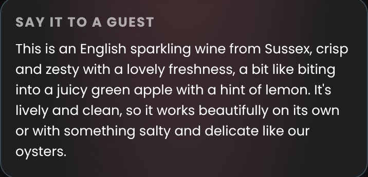

A guest asks about the Picpoul and gets "it's a white, quite nice". They order a beer. Vinterest for teams makes every server fluent in your list in their first fortnight, and keeps them that way as it changes. You see who's ready before doors.
We build the training from it and show you, on your own wines, in a week.
The second answer in each is a server's own card, written for your list and your menu. Not a tasting note; a thing to say.
Put your own numbers in. A floor that can recommend sells more wine per cover, and a manager who can see who's slipping fixes it before a Saturday, not after.
The lift is yours to set; we don't claim one for you. Once your till's sales are in, the console measures the real figure: what a server sells of a wine when they know it against when they don't, with the honest caveat that shifts and sections confound it.
A photo of the list and the menu. We read them and write a card for every wine and a pairing for every dish, from checked facts about the region and the grape, in your list's own prices and sections. Nothing reaches staff until you've seen what changed and said yes.

Five questions before service: the wines they sell most, the dish a guest just ordered, the one bottle on your list easiest to confuse with another. They say how sure they are first. What they get wrong comes back sooner; what they know comes back later, so it stays known.

One figure per person against the standard you set for their role: a server might need four in five wines by the glass, the sommelier nine in ten of everything. Ready, slipping, or not yet. Who's overdue, which new wines nobody knows, which glass pours too few people can sell.

Readiness isn't a quiz score. It's the share of your live list and menu a person can talk about right now, with answers that have been checked again without warning. Sales never move it; only drills do.

A tasting room is a wine list with the winemaker next door. Seasonal staff can talk about every wine on the bench in their first week, the flight is the menu, and the owner sees who's ready for the Saturday coach. For wineries and tasting rooms →
We'll build the cards, the questions and the manager's view from it and walk you through them on your own wines. No account to make, nothing to install for the look.